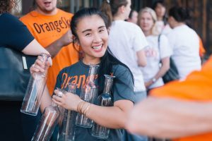
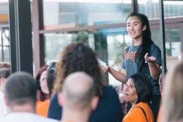
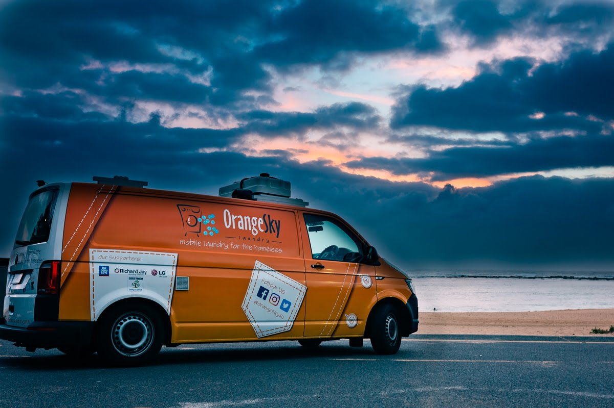

July 9, 2018
Orange Sky Australia is the world’s first free mobile laundry service for people experiencing homelessness – an idea founded in a Brisbane garage by two 20-year-old mates, Nic Marchesi and Lucas Patchett. There are now 13 vans servicing 121 locations around Australia and 3 of those have been combined to include shower facilities.
In February 2018, Orange Sky Australia rolled out one of these new combination vans in Canberra. We spoke with Noreen Vu, fondly known as Norz, the effervescent and inclusive Service Manager of Canberra and Queanbeyan.
For how long have you been part of the Orange Sky Community?
Norz: I have been volunteering with Orange Sky Australia for almost two years. I was engaged with them as a volunteer before their official Canberra launch, in April 2016.
What is it that drives your passion for this organisation?
N: I think it is a bit of everything. Firstly I love the concept, providing positive and genuine conversations whilst our friends are having their clothes washed. For me personally, I’ve grown so much as a person. Orange Sky has pushed me out of my comfort zone, a lot! It’s changed my life. Some days it’s hard to get the work/life balance right. I work full time so this role is an add on to my already busy life. But the volunteers and the people that we connect with through Orange Sky is what really does it for me! Volunteers and friends share beautiful personal stories with me and when I know I am making a difference in people’s lives. That’s what drives me to volunteer and to stay passionate about the cause.

Source: Orange Sky Australia
How is the new Combo Van going?
N: The Combo Van has been slow on the uptake, we have only had three showers so far! I think that after ANZAC day it might get more use as that is when the Safe Shelter opens up. We never operate alone. Our Sunday afternoon shifts sit alongside the Red Cross Roadhouse to allow our friends the comfort of a meal while laundry is tumbling away in a cycle and then they have a chat with us as it finishes up. We love hearing what they thought of the meal! So, while the Safe Shelter allows a place for people to get out of the cold, Orange Sky can extend that to provide a shower and clean clothes.
In the meantime the Laundry is still busy, but our friends are yet to get a feel for the new addition.
What has happened to Dasher?
N: Our wonderful Dasher clocked up 2200 washes for our friends in Canberra. He certainly has been a very busy boy throughout the last 20 months of service and has now been redeployed to the Central Coast and then will be going back to HQ for some tender loving. Once back in gear, he will be redeployed as a permanent service to provide even more friends with a platform for conversation.
Has the new Combo Van been baptised with a new name yet?
N: He is called Frosty, we thought that would be fitting for the cold we get in Canberra and Queanbeyan.

Source: Orange Sky Australia
What advice do you have for students who are keen to volunteer?
N: Many young people want to find an opportunity to volunteer, but perhaps don’t want to do so outside of their college or a group that they are associated with. Volunteering should be looked into as a way of representing yourself as an individual person, not as part of a college requirement.
I am often approached by a college group that wants to put forward students to provide them the opportunity to volunteer. While they mean well, we don’t want to rotate 100 people through as it would be meaningless to finding a connection with the people we are there for.
The focus of Orange Sky Australia is not just about providing clean clothes, it is the opportunity to make a connection to people, to talk with them and the Laundry simply provides a method of being able to do that.
Take a look at how Frosty was settled into his new digs.
This article first appeared in NowUC
« Previous Next »